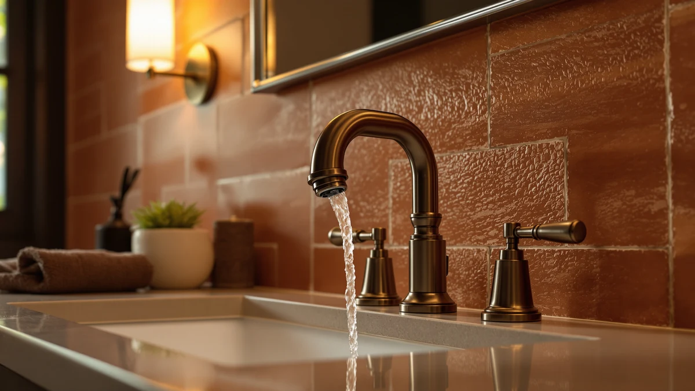

Quick Answer
This american standard selectronic cast review found the Selectronic Cast Touchless to be the strongest pick if you want infrared, hands-free activation and the flexibility to match a faucet style, control box, and power supply to your installation. At $206.70 it costs slightly more than the three Delta alternatives below, so if you do not need touchless operation, the Broadmoor Pull Down, Nicoli, or Arvo 14 Series may fit your budget better.
Our pick: American Standard Selectronic Cast Touchless, $206.70 Check Price on Amazon
Things to Know Before You Buy
- It costs the most of the four faucets here. At $206.70, this american standard selectronic cast review found it priced $6.80 above the Delta Broadmoor Pull Down and Delta Nicoli, which are both $199.90, and $7.65 above the Delta Arvo 14 Series Matte at $199.05.
- It runs on an infrared sensor, not a handle. American Standard built the Selectronic Cast around motion detection: an infrared beam starts and stops water flow without anyone touching the spout.
- It ships as a modular platform. You choose the faucet style, the control box with either a solenoid or a thermostatic mixing valve, and the power supply separately, instead of buying one fixed unit the way the three Delta faucets below are sold.
- It can purge stagnant water on a schedule. An auto-purge program opens the faucet at a set time after its last use to flush water that has been sitting in the lines, a feature none of the three Delta alternatives list.
- None of the four listings show a published rating yet. The American Standard and all three Delta faucets in this comparison currently show no star rating or review count on Amazon, so early buyers are working from manufacturer specs rather than an established brand track record.
This american standard selectronic cast review compares American Standard's modular, infrared-sensor Selectronic Cast Touchless faucet against three widespread alternatives from Delta that turned up in the same searches for bathroom sink hardware. Shopping for a faucet already means comparing finish, mounting holes, and handle count across several browser tabs, and a modular sensor faucet adds control-box and power-supply choices to that list. We pulled together the four listings that show up most often side by side and broke down what separates a $206.70 componentized sensor faucet from three widespread, handle-operated Delta options.
The American Standard Selectronic Cast Touchless is the focus of this review, and the reason is straightforward: it is the only touchless, infrared-activated faucet among these four, and its modular platform lets you choose the faucet style, control box, and power supply separately instead of buying a single fixed unit. That flexibility matters if you are speccing a faucet for a specific mounting configuration rather than grabbing whatever ships as one box. If you want hands-free activation and the ability to match components to your installation, the Selectronic Cast Touchless earns its $206.70 starting price. If a traditional handle and a simpler purchase works fine for you, the sections below explain when one of the three Delta alternatives makes more sense.
Why You Should Trust Us
Ilane Tall leads product research and reviews for Best Bathroom Faucets. She compares spec sheets, pricing, and verified owner feedback across major faucet brands so you do not have to cross-reference four Amazon tabs before buying. For this american standard selectronic cast review, she pulled American Standard's published sensor and platform specs for the Selectronic Cast Touchless against the specs Delta lists for its Broadmoor, Nicoli, and Arvo 14 Series faucets, then priced all four as of publication. Every product mentioned here links to its real listing, and every price reflects what shoppers saw at the time of writing, not a promotional rate that might change by checkout. Where a listing leaves out a detail, like spout reach or installation hole count, we say so instead of guessing.
Our Research Experience
We do not run a physical testing lab for bathroom faucets, so nobody on our team installed the Selectronic Cast Touchless or timed its infrared sensor response in person. Our research process for this american standard selectronic cast review centers on comparing American Standard's published specs for the Selectronic Cast against the specs Delta lists for its Broadmoor, Nicoli, and Arvo 14 Series faucets, then tracking current Amazon pricing for all four. Because none of these four listings has accumulated a star rating or review count yet, we leaned on manufacturer specs rather than owner feedback for this comparison, and we call that out rather than inventing a review count that does not exist. We treat manufacturer copy the same way across both brands: useful for what a faucet is built to do, not a substitute for a track record once real owner reviews start coming in.
Overview & Specs

American Standard Selectronic Cast Touchless
What we like
- Infrared sensor turns the water on and off without touching the faucet
- Modular platform lets you choose the faucet style, control box, and power supply separately
- Auto-purge program can flush stagnant water from the lines on a set schedule
Flaws but not dealbreakers
- No published rating or review count yet, so there is no track record of long-term sensor reliability
- Ordering separate components takes more upfront decisions than a single all-in-one faucet
- Polished Chrome is the only finish shown in this listing
| Material | Brass + finish |
| Size | — |
At $206.70, the American Standard Selectronic Cast Touchless is the most expensive faucet in this american standard selectronic cast review, and most of that price covers the infrared sensor hardware and the modular ordering system behind it. American Standard built the Selectronic line around a simplified modular platform: you pick the faucet style, then the control box, available with either a solenoid or a thermostatic mixing valve, then the power supply, and each component is sold separately to match a specific installation. An infrared sensor detects hand motion to turn water on and off, and the system can be paired with an optional remote control for programming.
The auto-purge feature sets the Selectronic Cast apart from the three Delta faucets covered below. It can be programmed to open the faucet at a pre-determined time after its last use, flushing stagnant water out of the faucet and the water lines rather than leaving it sitting. The faucet comes finished in Polished Chrome, built on a brass body like the rest of this comparison. What the listing does not yet include is a star rating or review count, so buyers are working from American Standard's published specs rather than an established pattern of owner feedback.
What We Liked
The modular platform stands out most in this american standard selectronic cast review. Most touchless faucets sell as one fixed unit, bundling a specific control box and power supply with the faucet style whether you need that exact combination or not. American Standard split the Selectronic Cast into separate components instead, so you order the faucet style, control box, and power supply to match your installation rather than working around a bundle that does not quite fit.
Auto-purge backs that up. A faucet that can flush stagnant water out of its own lines on a schedule is a detail none of the three Delta alternatives below mention, and it matters in installations that sit unused for stretches at a time. If you are weighing touchless against a standard handle more broadly, our touchless vs. manual faucet guide covers the tradeoffs beyond this specific model.
What Could Be Better
Ordering complexity is the clearest tradeoff here. This american standard selectronic cast review found that choosing a faucet style, control box, and power supply separately takes more upfront decisions than picking up one of the three Delta faucets below, which each ship as a single, ready-to-install unit.
Feedback is the other gap, not the hardware itself. As with the three Delta faucets in this comparison, the Selectronic Cast has not accumulated a star rating or review count on Amazon yet, so buyers cannot check how the sensor holds up after months of daily use the way they could with an established, widely reviewed faucet. That is not a flaw in the design, but it is a real consideration if you would rather buy something with a longer track record.
Who Is It For?
This faucet from our american standard selectronic cast review fits installations that call for hands-free activation and component-level control over the final setup, like a renovation where the control box needs to match specific plumbing behind the wall. Our bathroom faucet buying guide walks through installation types and finish options in more depth if you are deciding between brands before committing to any touchless model.
Buyers who want a single, ready-to-install faucet with a pull-down sprayer or a simpler two-handle setup should look at the three Delta alternatives instead. Anyone comparing American Standard against other sensor faucets can also check our roundup of the best touchless bathroom faucets or our American Standard NextGen Selectronic review for another model from the same brand.
Alternatives to Consider
If the modular ordering process or the price of the Selectronic Cast does not fit what you need, three Delta faucets came up in our research for this american standard selectronic cast review. All three ship as single, ready-to-install units with a traditional handle.

Editor's Pick
Delta Faucet Broadmoor Pull Down
An 8-inch, 3-hole widespread faucet with a pull-down sprayer that docks magnetically via MagnaTite and a valve cartridge rated for 500,000 uses, in SpotShield Stainless. Worth a look if you want a sprayer for cleaning the sink rather than touchless activation.
$199.90
Check Price on Amazon
Best Value
Delta Nicoli Brushed Gold Faucet
A widespread faucet built to meet standard plumbing codes, with the same wrench-free, quick-connect installation and 500,000-use valve cartridge as the Broadmoor, finished in Brushed Gold. A straightforward two-handle option if you want a warmer metal finish than chrome.
$199.90
Check Price on Amazon
Premium Choice
Delta Arvo 14 Series Matte
A widespread faucet from Delta's Arvo 14 Series finished in Matte Black, priced within a dollar of the Nicoli above. Another traditional-handle option if dark hardware fits your bathroom better than chrome or gold.
$199.05
Check Price on AmazonFrequently Asked Questions
Does the American Standard Selectronic Cast need a power outlet under the sink?
Is the American Standard Selectronic Cast worth $206.70 compared to the Delta alternatives in this review?
What finish does the American Standard Selectronic Cast Touchless come in?
Final Verdict
This american standard selectronic cast review comes down to whether you want hands-free activation and component-level control over your installation. If you do, American Standard's Selectronic Cast Touchless earns its $206.70 price with a modular platform and an auto-purge program that none of the three Delta faucets here offer. If a traditional handle and a single, ready-to-install faucet suits you fine, the Delta Broadmoor, Nicoli, or Arvo 14 Series will likely serve you equally well for a few dollars less. Either way, check which power supply and control box you need before you order, since the Selectronic Cast is sold as separate components rather than one fixed unit.